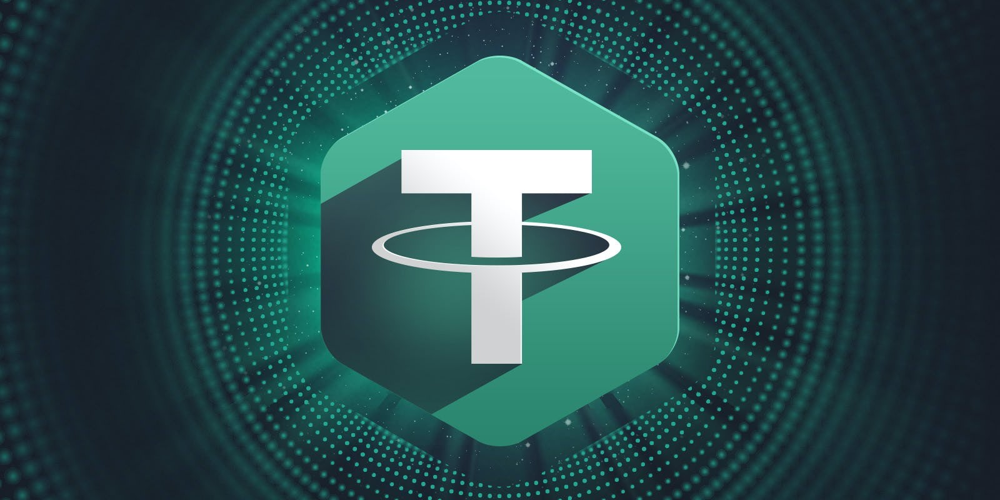

THE CRYPTOCURRENCY THAT DOES NOT FLUCTUATE
WHAT IS THETER?
USDT, or Tether, is a cryptocurrency known as a "stablecoin," designed to maintain a stable value relative to a fiat currency, typically the US dollar. It is a digital token whose value is backed by a reserve of fiat currency in a 1:1 ratio. USDT works as a digital token that utilizes blockchain technology to record and validate transactions. Each unit of USDT in circulation is backed by an equivalent amount of fiat currency, held in a bank account or other reserve. This ensures that the value of USDT remains stable and is linked to the value of the underlying fiat currency.
BEGINNING OF THE THETER?(USDT)
was launched in 2014 under the name "Realcoin" and was later rebranded as Tether. The idea behind its creation was to provide an alternative to volatile cryptocurrencies by offering a digital asset whose value was stably linked to a fiat currency. The founders of Tether are Brock Pierce, Craig Sellars, and Reeve Collins, who launched the cryptocurrency through the company Tether Limited. However, there is some controversy regarding the true identity and transparency of the founders.

BACKING TECHNOLOGY
The technology backing USDT is blockchain. This stablecoin operates on various blockchains, including Bitcoin, Ethereum, Tron, and others. Through these blockchains, USDT tokens are issued and tracked.
THETER OBJETIVE
The main objective of the creator of USDT was to provide a form of digital transaction that was backed by a stable fiat currency, such as the US dollar. This would allow users to move funds more efficiently in and out of the cryptocurrency ecosystem, without being affected by the price volatility typical of many other cryptocurrencies. Additionally, USDT is used as a trading tool and store of value within the cryptocurrency market, enabling traders and investors to mitigate the risk of exposure to market volatility.